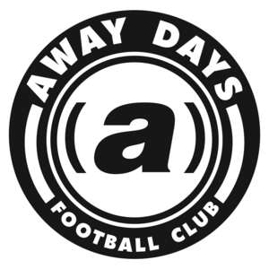

Trade Mark Journal No.2025/033 15 August 2025
UK00004239502 25 July 2025 (18,25,28,41)

- Class 18
- Sport bags; Sports bags; Bags for sports; Bags for sports clothing; All-purpose sports bags; All purpose sport bags; Athletics bags; Athletic bags; Duffle bags; Holdalls for sports clothing; Duffel bags; Sports [Bags for -]; All purpose sports bags; Gym bags; Duffel bags for travel; Tote bags; Shoe bags; Carry-all bags; Crossbody bags; Cross-body bags; Grocery tote bags; All-purpose athletic bags; Bags; Toiletry bags; Drawstring bags; Kit bags; Carry-on bags; Bags for school; School bags; Boot bags; Casual bags; Shoulder bags; Waterproof bags.
- Class 25
- Sport shirts; Sports shirts; Clothes for sport; Soccer shirts; Football shirts; Polo shirts; Sports jerseys; Sports shirts with short sleeves; Shirts; Jackets being sports clothing; Sports jackets; Clothes for sports; Sports garments; Sports clothing [other than golf gloves]; Clothing for sports; Sports clothing; Sport coats; Short-sleeve shirts; Football jerseys; Casual shirts; Jerseys [clothing]; Sports caps and hats; Knit shirts; Short-sleeved T-shirts; Articles of sports clothing; Sweat shirts; Sports caps; T-shirts; Jerseys; Jackets; Jackets [clothing]; Windproof jackets; Denim jackets; Rainproof jackets; Wind-resistant jackets; Waterproof jackets; Casual jackets; Hoods; Hoods [clothing]; Hooded tops; Hooded sweatshirts; Hooded sweat shirts; Knitwear; Knitwear [clothing]; Knitted clothing; Ready-to-wear clothing; Sweaters; Woolen clothing; Embroidered clothing; Tracksuit bottoms; Tracksuit tops; Tracksuits; Sweatpants; Jogging bottoms [clothing]; Visors [clothing]; Linen clothing; Trunks; Gloves [clothing]; Headbands [clothing]; Bottoms [clothing]; Jogging bottoms.
- Class 28
- Sport balls; Balls for sports; Sports balls; Balls for playing sports; Inflatable balls for sports; Soccer balls; Futsal balls; Bags specially adapted for sports equipment; Bags adapted for sporting articles; Sporting articles and equipment; Balls being sporting articles.
- Class 41
- Sports activities; Sporting activities; Sporting and recreational activities; Entertainment, sporting and cultural activities; Sporting and cultural activities; Cultural and sporting activities; Sports entertainment services; Education, entertainment and sports; Entertainment services relating to sporting events; Video editing; Editing of video recordings; Audio and video production, and photography; Audio, video and multimedia production, and photography; Video production; Editing or recording of sounds and images; Audio, film, video and television recording services; Video taping; Production of video and audio recordings; Production of video recordings; Video tape production; Video film production; Recording, film, video and television studio services; Production of pre-recorded video films.
AwayDaysYT Ltd